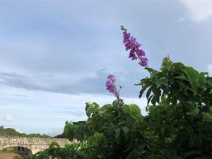

うるがいの話 ある日
最新: 不要不急とは
うるがいとは 前提知識です
カニの画像をクリックすると『うるがいの話』サイトを表示します
うるがい(ｳﾙｶﾞｲ urugai)とは、『もずくがに』の名前でとても大きくなります。
たながー（ﾀﾅｶﾞｰtanagaa）とは手長えびのことで、何種類かあり大きいのは車 エビぐらいになります。
ぶながー(bunagaa)とは、赤い髪の毛、赤い身体、そして身長は１ｍ２０ｃｍ ぐらい、川の蟹を食べているの目撃された。場所は沖縄県国頭郡大宜味村のと ある村僕の隣近所に住んでいる爺さんから、聞いた話です。
2021年07月13日 (火）
不要不急とは
10:04

「どうしても必要というわけでもなく、急いでする必要もないこと」と解され
る。だよな、宣言の度に「不要不急な外出を控える」と言われる。確かにそう
だが、もうほとんど行動されていないようだ。いつの間にか、「リモートワー
ク ７割」が聞かれなくなった。あまりにも非現実的だから、どうして誰も無
理と言わないのだろうと憤りを感じていた。アベ総理が去年の全国の小中高に
対し突然来週３月２日から春休みまで臨時休校を行うよう要請しますとテレビ
で宣言する。そして、卒業式はどうするのかとドラマ「ひきこもり先生（最終
回）はもめにもめる。おっと、本日時間切れ明日へつづく
子供が心療内科に行った帰りに家に来た。昨日から会社に行けなくなった、パ
ニック状態、過呼吸発作になりそうだったと。医者は、もう会社に行かなくて
もいい！と診断書を上げた。家で話すと少し落ち着いたようで、最後に会社に
文句を言えばよかった、と。最後の出勤予定の２１日まであと８日営業日だっ
たが。